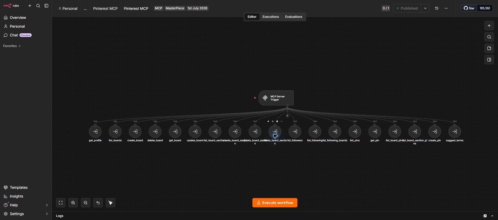

AI infrastructure / published
Pinterest MCP Server
A self-hosted Model Context Protocol server that turns the Pinterest API into a practical toolset an AI client can call. One published n8n endpoint coordinates profile, board, section, follower, and pin operations.
System flow
- Receive an MCP tool call from the connected AI client
- Route the request to one of 19 purpose-built Pinterest tools
- Authenticate the operation through the configured API connection
- Return the real Pinterest result through the MCP server
What this proves
- Published workflow visible in the production n8n workspace
- Nineteen named tools are connected to one MCP Server Trigger
- Recorded walkthrough demonstrates the real system rather than a mockup
- Architecture supports reusable AI access instead of a single fixed automation
